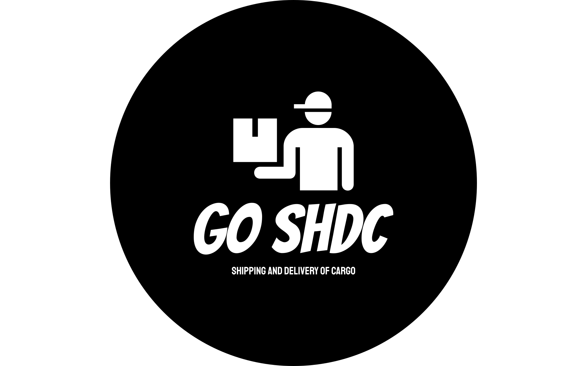

Welcome to GO SHDC - Your Cargo Management Solution
About GO SHDC:
GO SHDC is a cutting-edge platform designed to streamline and optimize your cargo management process. The acronym GO SHDC is derived from the names Geronaga, Odgien, Silva, Hugo, Dinglasan, and Cunanan, reflecting the collaborative effort behind its creation.
Services Offered:
- Cargo Status Tracking:
- Pending Cargo: Keep tabs on shipments awaiting processing.
- Progressing Cargo: Monitor real-time progress through shipping stages.
- Complete Cargo: Track and confirm successful deliveries.
- Cargo Actions:
- Cancel Cargo: Easily cancel cargo requests for flexibility.
- Reject Cargo: Clearly communicate and resolve shipment issues.
- Cargo Shipping:
- Efficient Logistics: Utilize the platform for seamless cargo shipping.
- Real-time Updates: Receive instant notifications about your cargo's journey.
Why Choose GO SHDC?
- User-Friendly Interface: Navigate and manage cargo with ease.
- Transparency: Gain visibility into your cargo's journey.
- Customizable Solutions: Tailor solutions to meet specific needs.
GO SHDC's Rates:
- Point-to-Point: 0.10
- Cross-Island: 0.25
- Heavy and Special: 0.40
Supported Currencies:
- USD (U.S. Dollar)
- PHP (Philippine Peso)
- EUR (Euro)
- JPY (Japanese Yen)
- GBP (British Pound)
- AUD (Australian Dollar)
- CAD (Canadian Dollar)
- CNY (Chinese Yuan)
- INR (Indian Rupee)
Experience the future of cargo management with GO SHDC. Sign up now and take control of your logistics operations like never before. The acronym not only represents the founders but also embodies a commitment to excellence and innovation in the logistics industry. Join us in reshaping the future of cargo management.